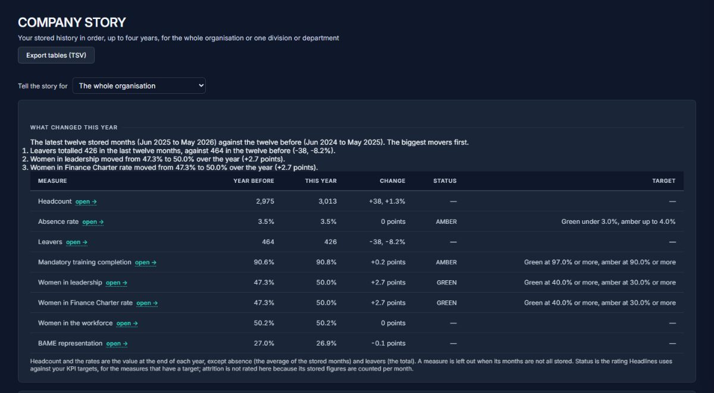

It is the third of the month and I am stitching five exports into one spreadsheet. Again.
One drop zone. The engine reads the exports you already produce and maps every source onto one vocabulary, so the stitch happens once — not every month.
For the HR leader who is also the MI team
Your headcount, absence and leavers live in one HRIS. Recruitment, learning and employee relations live somewhere else, often a spreadsheet. HR Intelligence reads the exports you already produce, maps them onto one model and answers the board’s questions with a trail back to the file. It runs in your browser. Nothing is sent to Help Studios.
Your exports
In your browser
Never uploaded to Help Studios
What you get
The month-end you already know
None of this is a complaint about your HRIS. It does the job it was bought for. The gap is the layer between the system of record and the board pack — and it is the layer HR teams rebuild by hand every month.
It is the third of the month and I am stitching five exports into one spreadsheet. Again.
One drop zone. The engine reads the exports you already produce and maps every source onto one vocabulary, so the stitch happens once — not every month.
The board asks where a number came from, and I cannot prove it.
Provable provenance. Every measure carries its source fields and its formula, and the Power BI export keeps that trail intact — back to the file you uploaded.
Absence and attrition sit in my HRIS, employee relations in a spreadsheet and learning in another system, so I only ever see them apart.
Joined-up dots. Cross-module signals link them: an absence pocket, the ER exposure behind it, and the retention-risk factors present, in one view.
I find out who is leaving when they resign.
Retention risk, honestly scored. The factors present in people who left, and who still here carries them — with the critical roles that have no cover, and a plain statement when the pattern is no better than chance on your data. A signal to investigate, never a decision.
A vendor renames a column, a report breaks, and nobody notices for a month.
Checked on every load. Schema drift and data health are surfaced on upload, with the exact rows to fix — before the board pack is built on them.
The product, not a promise
Four screens from a real run on synthetic demo data. No stock photography, no invented dashboards, and no numbers typed in for the photograph.
Demo data — Meridian Bank, a synthetic fixture. The engine, calculations and layout are the shipped product.
How it works
The same person is a Worker in one system, an Assignment in another and a row in somebody's spreadsheet. HR Intelligence maps every source onto one vocabulary, so the headcount in the board pack and the leavers in the tracker finally describe the same people.
You do not have to run one of these. Workday, Oracle Fusion HCM, SAP SuccessFactors, Core HR (People XD), BambooHR, iTrent, ResourceLink, ADP and Sage HR are the systems whose column names the engine already knows, and an Excel or CSV export covers everything else. Load one of them, or all of them, or a different vendor in every country — the engine merges whatever it is given into the same model, and a system it has never seen is read from its headers rather than turned away.
Your core HRIS, whichever it is
Any number of vocabularies. Unlinked insights.
In your browser
One vocabulary. Never uploaded.
One linked view
Every figure traces back to a file.
Field map
Selected system: Workday
| Unified model | Workday field |
|---|---|
| Employee Reference | Worker_ID |
| Department | Supervisory_Organization |
| Job Title | Job_Profile_Name |
| Grade | Grade |
| Full Time Equivalent | FTE |
| Legal Gender | Gender |
| Ethnicity | Ethnicity |
| Date of Birth | Date_of_Birth |
| Start Date | Hire_Date |
| Manager Reference | Manager_ID |
| Cost Centre | Cost_Center_ID |
| Location | Location |
| Leave Date | Termination_Date |
Workday names all 13 of these columns in its own vocabulary.
Names are read from the engine's own field registry — 180 canonical fields, a vocabulary for each of ten systems, and 1,176 spellings the mapper resolves across the headcount, absence and leavers exports. These thirteen are the engine's headcount template, kept to the columns whose own name resolves to the field they belong to. A muted name is the engine's template column rather than the system's word: that vocabulary has no name for the column, so the engine reads your header, or you map it once on upload — which is why a system listed above with a short vocabulary, or one not listed at all, still gets the same model. Load one source or every source; they merge. Headcount is not a column anywhere — the engine counts rows — and leave reason and absence days arrive with the leavers and absence workbooks.
Showing Workday field names.
Check the privacy claim — do not take it on trust
Before HR Intelligence calculates anything, it reads the header row and profiles every column. That step is running on this page, on an export held in memory — so you can see the work without handing a file to a website. Your own data stays on your own machine, which is the whole claim.
What runs here
The sample is a fictional Meridian Bank headcount export, held as a string in
js/site.js. No upload, no storage, no request — the Network panel
stays empty.
Profile
—
| Column in your file | Looks like | Maps to |
|---|
Header matching is a heuristic, and it is the cheapest part of the mapping. In the product the mapper is configured per client, so every header it cannot place becomes a decision surfaced in Client Setup rather than a guess.
The layer your HRIS never shipped with
Your HRIS — Workday, Oracle, SAP, People XD, BambooHR, or the one with no logo at all — is an excellent system of record: you were right to buy it. What it was never built to ship is the layer that turns records into answers: what changed, who it is about, why it moved, and a number you can defend to the board. HR Intelligence reads the exports you already produce and adds that layer, while your HRIS keeps doing the job it was bought for.
The gap, in plain terms
Your HRIS stores every change; it never tells you which one matters. This does.
What changed since last month, on one screen — not the same dashboard you read last month.
The rolling 12-month view the board actually asks for.
The story behind each number, in plain English.
When a file is missing, it says so — never a fabricated figure.
Your HRIS records who left; it does not tell you who is next, or why.
A scored list with the factors that moved, checked against who actually left, and honest when it is no better than chance.
The people and roles whose loss would actually hurt, flagged.
The living list of the people already on your radar — with reasons and owners.
Why people left, joined to the leaver — not an anecdote.
Your HRIS keeps the data; it does not give you a figure you can defend in writing.
Every number's definition and source, in writing, for Finance and audit.
A quality score with the exact rows that need fixing.
Tells you when your vendor renamed a column — before the report silently breaks.
HR and Finance finally agree on the same total.
Your HRIS exports data; it does not export the deck.
Executive Pack, Presentation Deck, A3 and Intelligence Brief — generated from one set of numbers.
Every measure carries its source fields; Finance reconciles without re-checking.
The gender pay gap computed once, correctly — no re-keying.
Each KPI linked to its formula, so “agreed” means the same thing to everyone.
Your HRIS ships with vendor defaults; you should decide what “red” means.
Your thresholds, your scoring weights — not the vendor's defaults.
Guided historic load with honest gaps, not silent blanks.
What inaction is costing you, modelled from your own data.
Who is due a 90-day new-starter survey or an exit survey, with the send list and the questionnaire. You send from your own tools; nothing leaves your browser.
The story over time
Load up to four years of your own history and read it in chapters, for the whole organisation or any division or department. This year against last. Each measure against your targets in red, amber and green. Diversity and Women in Finance Charter progress as a journey. Where this month sits in your own history. What came before people left.

Surveys that close the loop
Most HR teams run new-starter and exit surveys by hand and never connect the answers to the people data. HR Intelligence works out who is due from the dates already in your headcount file, writes the send list and the questionnaire, and keeps everything inside your own estate.
Confidential, not anonymous: because each person is sent their own survey, you will know who answered. The email says only what is true.
The four-minute walkthrough
The demo follows an HR Director through a realistic month-end: upload, signal review, board export, trust statement. Synthetic data only — the narrative is real.
The recorded walkthrough is in production.
The run-through is being filmed now. In the meantime we will walk your own month-end exports through the engine live, on a call, using anonymised extracts.
Request a live walkthroughThe demo runs four minutes and forty seconds and uses synthetic data only.
Engine surfaces the signal. HR investigates.
The product
HR Intelligence is organised around the six navigation areas HR leaders actually use — not a flat list of fifty reports. Each area draws from the same uploaded files and the same calculation integrity rules.
Executive Pulse, attrition, absence, FTE governance, pay equity, learning compliance, recruitment, and board-ready packs.
Watch Register, retention risk, org view, critical roles, onboarding intelligence, exit surveys.
Employee relations, performance, management risk, culture and diversity, data health.
Honest cost-of-inaction modelling from your uploaded data — no fabricated benchmarks.
Guided historic load, file-by-file validation, honest gaps when files are missing.
Organisation structure, thresholds, and scoring weights you control — not hardcoded defaults.
The Power BI bridge
HR Intelligence exports a board-ready Power BI dataset — your board sees the right numbers in the tool they already trust. Full field mapping and provenance travel with the export so Finance and HR can reconcile without a parallel spreadsheet.
Measure
Voluntary attrition · rolling 12 months
Source fields
Traces back to the file you uploaded — not to a number we typed in.
Trust signals
Help Studios is led by Peter Roberts — twenty years in regulated financial services HR, from operational people management to board-facing MI. HR Intelligence was built because board packs deserve calculation integrity, not demo numbers.
Processing runs entirely in the browser; Help Studios never receives your files. See the first step run on this page.
Product judgement shaped by FCA-regulated employers, not generic SaaS patterns.
No hardcoded numbers in any calculation, render, or fallback path; honest insufficient-data states when files are absent.
Every analytical panel says the same thing: the engine surfaces signals; HR investigates.
“The first question the Risk Committee asks is where the data went. It is the right question, and the product should be built so the answer is short.”
Peter Roberts — founder, Help Studios Ltd
Next step
After the demo, book a confidential walkthrough. We can work from anonymised extracts — you choose what to share.